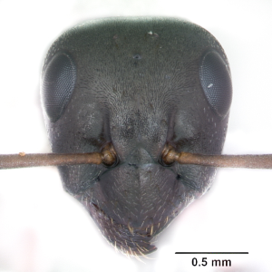

AntWeb nigerrimus rufescens samurai AntWeb " style="cursor:help;">Cly " style="cursor:help;">(TL) Camponotini Camponotus Polyrhachis AntWorld.org " style="cursor:help;">Cly Lasiini Acropyga Anoplolepis Lasius Plagiolepinii Lepisiota Nylanderia Paratrechina Plagiolepis Prenolepis Formicini  AntWeb " style="cursor:help;">Cly " style="cursor:help;">(TL) Formicini Bajcaridris Cataglyphis Formica Proformica